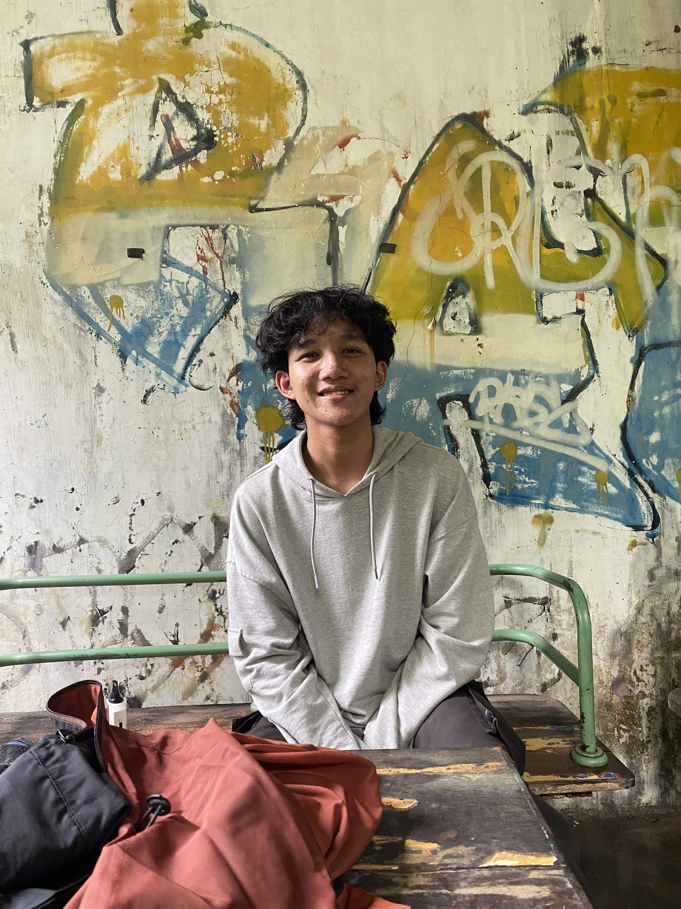

Profile
Yusriyah Fajar Dwiputra Santoso
Mechatronics Engineering
About
Sedikit cerita tentang saya
Berawal dari saya masuk ke Sekolah Menengah Kejuruan (SMK) Negeri 8 Malang, jurusan Teknik Mekatronika. Di sekolah ini, saya belajar banyak hal tentang dunia teknik terutama di bidang Mekatronika, contohnya seperti Desain 3D menggunakan software Autodesk Inventor, kemudian pemrogramman PLC menggunakan CX Programmer serta HMI Menggunakan CX Designer dan NB Designer. Saya juga berkesempatan untuk mengikuti ajang kompetisi tingkat provinsi Jawa Timur yaitu Lomba Kompetensi Siswa (LKS) dengan mendapatkan penghargaan yaitu Juara II pada tahun 2024 & 2025 dengan bidang lomba Mechatronics, yang membuat saya semakin tertarik dengan dunia teknik dan teknologi, terutama pada bidang robotika dan otomasi industri.
Saya juga memiliki pengalaman dalam mengikuti beberapa pelatihan dan sertifikasi baik dalam sekolah maupun di luar sekolah, seperti pelatihan Festo Didactic yang bekerja sama dengan TÜV Rheinland, yang memberikan pemahaman lebih dalam tentang sistem otomasi industri. Selain itu, saya juga memiliki sertifikasi Uji Level Kompetensi Keahlian (UKK) dan sertifikasi UK SMK, yang membuktikan kemampuan saya dalam bidang teknik Mekatronika. Setelah saya menyelesaikan pendidikan saya di SMK, saya berencana untuk melanjutkan pendidikan saya ke jenjang yang lebih tinggi, yaitu perguruan tinggi di Politeknik Elektronika Negeri Surabaya (PENS) dengan Prodi Teknik Mekatronika. Tak lupa saya tetap ingin memperdalam pengetahuan saya dalam bidang teknik dan teknologi, serta mengembangkan keterampilan saya dalam merancang dan membangun sistem otomasi industri maupun pada bidang robotika yang lebih kompleks.
Connected